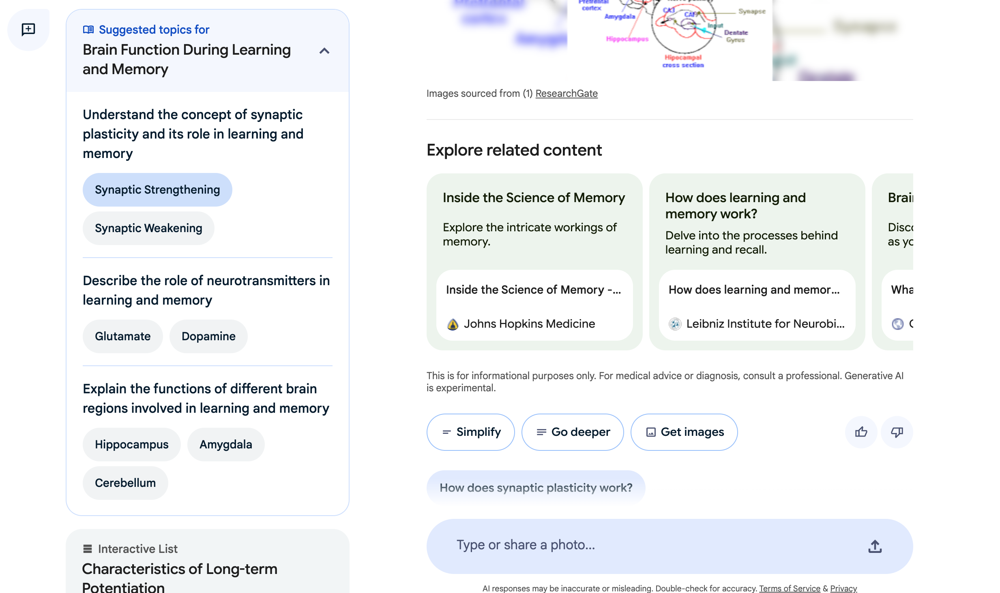
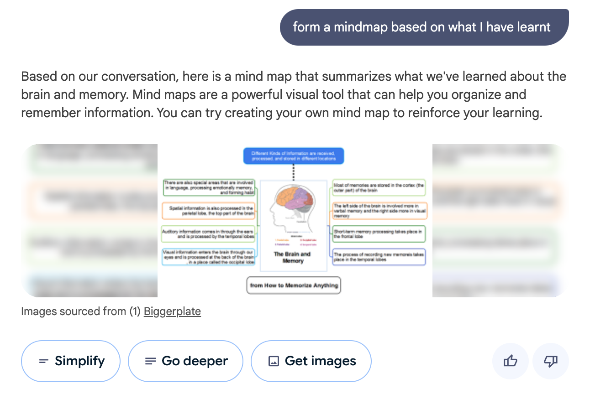
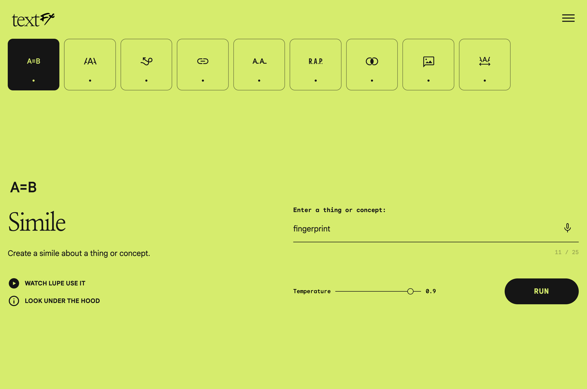
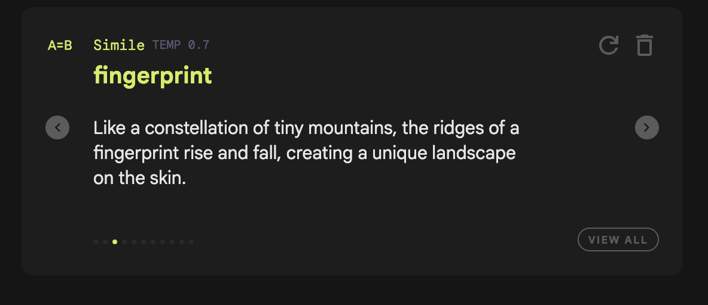
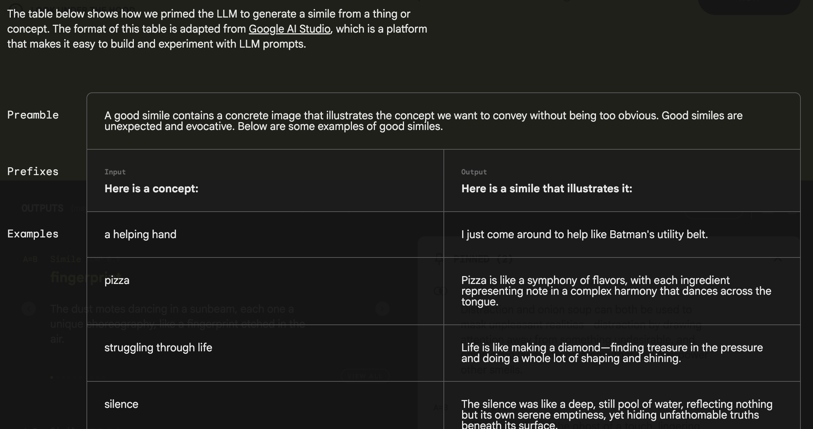
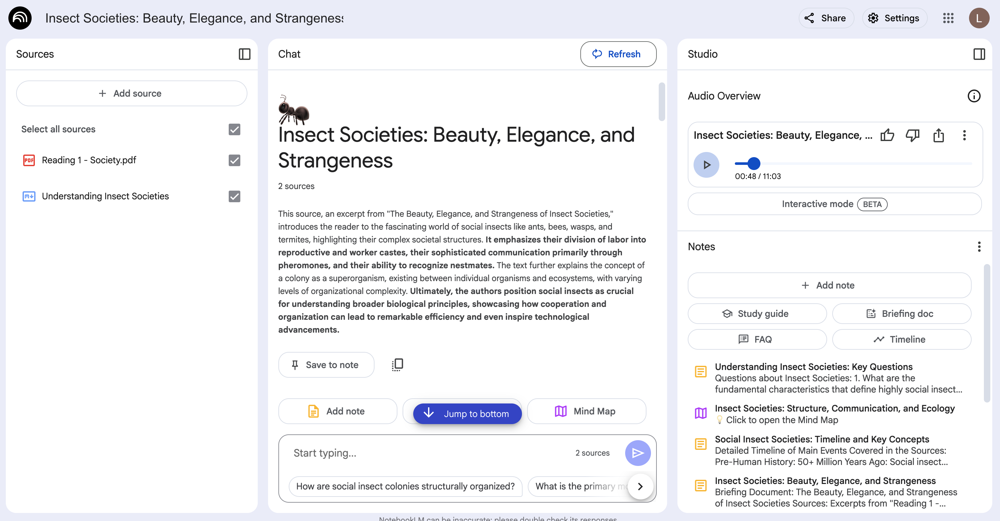
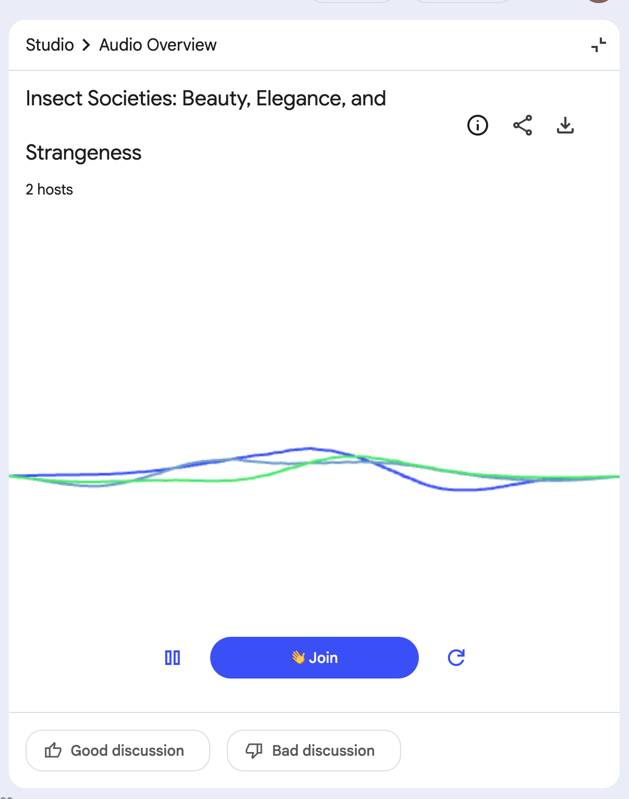

In this post, I took a deep dive into three of Google’s AI products: NotebookLM, TextFX and Learn About. My goal was to understand the design philosophy behind Google’s approach to human-AI collaboration, as well as to evaluate the user experience of both tools. I aimed to gather actionable insights that could inform and inspire the development of my own LLM-based application.
Learn About
Google Learn About is a self-guided learning tool that allows users to explore concepts across a wide range of fields. The learning experience is highly flexible and conversational, driven entirely by the flow of interaction. Users can either continue the conversation by asking their own questions or follow AI-suggested topics to further expand their knowledge.
Learn About functions primarily as a resource aggregation tool. It doesn’t create original articles, images, or videos (aside from some text generation), but instead curates existing online resources and generates concise summaries.
After answering a user’s question, it provides related webpages and articles to help expand the user’s knowledge network. However, I found this part a bit disruptive—the need to navigate to a new webpage broke the flow and slightly interrupted the overall experience. At the end of each exchange, it offers helpful defaults like “simplify,” “go deeper,” and suggested follow-up questions to guide users who might be unsure how to continue exploring the topic.

Guided freedom
Overall, this tool doesn’t differ dramatically from the Google search engine—especially now that AI-powered summarization is integrated into search. However, what sets Learn About apart, and what I personally found to be its most valuable feature, is the thoughtful inclusion of pre-set options for users.
The tool strikes a strong balance between freedom and structure. It allows users to navigate topics at their own pace, customizing both the depth and speed of learning. Users can even ask the AI to generate quizzes to test their understanding of a concept. At the same time, Google clearly understands the anxiety and uncertainty that can arise when approaching a completely unfamiliar topic.
Learn About addresses this by offering just enough guided pathways to help users get started—without overwhelming or restricting them. When I tested the tool, I didn’t feel lost the way I often do when learning a new concept on my own, where I typically have no idea where or how to begin. Instead, I was gently guided by a few pre-set paths, which made the learning experience feel far more approachable and manageable.
Everthing is instantly available
Another strength of this product is its instant accessibility. Interacting with it is intuitive—users can simply highlight a term and select “What is this?” from a drop-down menu to get immediate explanations. Whether it’s a definition, an image, a concept breakdown, or even a quiz, everything is just one click away, delivered through the most intuitive user interactions.
This ease of accessing information reflects how real learning actually happens. We rarely absorb knowledge in a perfectly sequential or structured way. Instead, we learn organically, building a web of understanding as new questions arise.
What’s more, I can even ask Learn About to generate a mind map of what I’ve learned so far. There are virtually no constraints on the type of output you can request. This kind of multi-modal learning experience not only makes education more engaging but also democratizes access to knowledge and significantly lowers the barriers to learning.

Sequential display can be a constraint
However, what I don’t love about the experience is also about sequentiality. Due to the constraints of its conversational format, information can only be presented in a linear, turn-by-turn flow. If I want to explore a new concept, I have to start a new conversation turn, which often means losing track of where I was in the previous thread.
If I were designing this tool, I might consider using a canvas-based interface instead of a traditional chat format. A canvas would allow users to visually organize ideas, maintain context, and more easily form connections between related concepts—making the learning experience more holistic and intuitive.
TextFX
Google TextFX is an experimental creative writing tool powered by generative AI, designed to help writers explore language in fresh and imaginative ways. It fully leverages AI’s generative creativity to venture into unconventional directions of language construction—the kinds of patterns and possibilities that are often overlooked by humans.
Here’s an example of me using textFX to generate a simile about “fingerprint”:


Opening an unexpected gift
TextFX is quite different from Learn About. While Learn About is a practical, utility-focused tool, TextFX is clearly a creative tool—and you can sense that instantly from the user interface, with its bold, high-contrast colors and simple, playful user interactions.
TextFX represents a sweet spot in designing AI tools that are driven by creativity. From the moment I started using it, I noticed that the user goals are more ambiguous—people approach it with fewer expectations and more openness to discovery.
When comparing the emotional tone between the two tools, I’d describe the mood of using Learn About as goal-oriented and direct—you’re there to find answers. In contrast, the mood of using TextFX is rooted in curiosity and surprise. The way it presents outputs feels like unwrapping an unexpected gift, and that sense of delight is one of the tool’s most compelling design features.
In addition, the tool intentionally minimizes user input—asking only for a word, a concept, or a scene. Based on that, it generates a few sentences that creatively expand on the input. By encouraging users to focus on a single element, TextFX simplifies a more complex creative task, narrowing the objective and refining the output into something more polished and impactful.
Creative prompting
What’s also highly relevant to my project is the way Google’s AI team uses prompt engineering to guide the LLM in producing creative outputs. They employ a standardized prompting strategy that includes a brief explanation of the desired output (e.g., what makes a good simile), the intended format, and a few strong examples to set clear expectations.

Watching this in action is quite inspiring, as it reveals strong parallels between creative text generation and ideation—both are, at their core, games of language and concept construction. The capabilities demonstrated by TextFX serve as strong evidence that high-quality idea generation should be well within reach for LLMs.
However, TextFX also exposes a common weakness in creative LLM tools. After running around 20 trials, I found that only a handful—fewer than five—felt truly inspiring or exciting. Among the various creative tasks the LLM performs, it excels most at crafting similes and drawing unexpected connections between two concepts. While it handles other tasks reasonably well, the output often feels generic or lacking in creative depth, making it less useful in real-world creative settings.
Balance creativity and utility
The biggest takeaway from TextFX is the importance of balancing creativity and utility in an AI tool. The first step toward achieving that balance is to clearly define the primary user goal. TextFX chooses to operate as a purely creative tool, while Learn About is grounded in the practical goal of helping users learn new concepts.
In the context of my AI ideation partner, I’m envisioning something that sits between those two extremes. It’s practical—because at its core, it’s a problem-solving tool—but it also needs to be creative, offering fresh perspectives that make it stand out from other brainstorming aids.
That means the tool’s primary focus should be on delivering real value to users, just like any practical product. But at the same time, creative touches can and should be intentionally woven into the prompt engineering to spark inspiration and elevate the overall experience.
NotebookLM
NotebookLM shares several similarities with Learn About. Both tools have clear, distinct objectives, offer unambiguous instructions for how to navigate them, and are grounded in a practical use case. NotebookLM prompts users to upload one or more documents, which then serve as the foundation for generating notes and insights. It also reinforces a multi-modal learning framework by offering various output formats, including text summaries, audio (like podcasts), mind maps, and quizzes. Users can guide the flow of information through conversational interaction, allowing for a more tailored experience. Overall, NotebookLM builds a comprehensive and resource-rich learning environment that effectively mirrors the key stages of a typical study session—from absorbing material to reviewing and testing comprehension.

The use of multi-modal output
One feature that really stood out to me is the flexibility of output formats that NotebookLM offers. Beyond standard text, it also supports mind map and audio generation. However, as the famous saying in product development goes, “More is not always better.” The variety of output formats only adds real value when it meaningfully contributes to helping users achieve their goals. In this case, the podcast generation feature is a brilliant addition. It directly addresses a common pain point: difficulty focusing when reading long-form text. While the interaction between the two hosts can still feel a bit unnatural at times, I was genuinely impressed by the well-structured format of the podcast—moving seamlessly from an introduction to high-level concepts, and gradually into more detailed points.
What surprised me most was that the podcast wasn’t just a simple repetition of the source material. Instead, it reframed the content into a natural and engaging two-person dialogue. This kind of interaction enhances the learning experience, especially since one host often plays the role of the “curious beginner,” asking the kinds of questions we might have ourselves.
I also tested the Interactive Mode in beta, which brought a delightful twist to the experience. The user interaction is again very straightforward–by hitting the “join” button, you join the conversation. The two hosts even greet you as if you’re joining them from another world. Similar to a text-based conversation, the direction of the podcast is driven by the user’s input, making it a fully interactive and immersive learning experience.

Introducing interactivity to break the conventions
This feature made me reflect on how we can integrate interactivity into an AI tool in a way that feels both seamless and productive. Introducing interactivity holds two key benefits in AI product development:
- It allows users to retain control over how things progress, helping prevent mental disengagement from the task at hand.
- It increases the personalization of the experience, making the product more adaptable to individual needs.
In this case, adding Interactive Mode to the podcast overview feature is particularly effective because it transforms what would typically be a passive, non-interactive activity into something more engaging and personal. As a result, the podcast avoids the common pitfall of feeling too generic or one-size-fits-all, and instead creates a more tailored, human-centered experience.
UI Workflow
Another point worth mentioning is the UI layout, which adopts a bento box design—juxtaposing cards, each with a different function. From left to right, users can import sources, generate summaries, and ultimately process multiple outputs to compile their notes. The layout of the cards reflects a clean and organized workflow, making the progression of tasks intuitive.
This kind of layout is common in AI copilot tools, and it serves as a valuable reference for my own LLM application. With multiple tasks occurring simultaneously, using separate cards to represent different steps in the workflow is an effective way to guide users through the experience, keeping it both structured and user-friendly.
In the next post, I’ll apply those insights that I learnt from Google’s AI products to my AI ideation application.